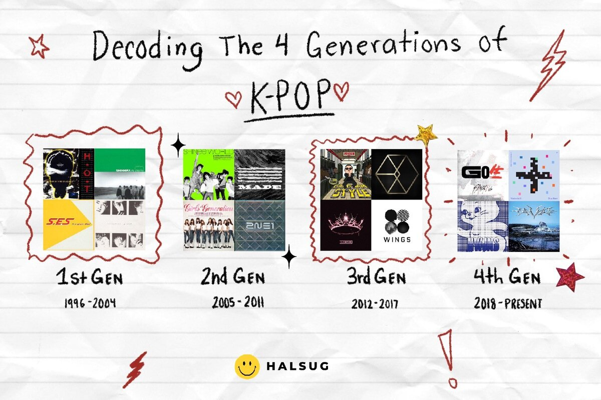

<!DOCTYPE html>
<html><title>FLM WEBSITE</title></html>
<body>
<header>
<a href="GEN. 1">

</a>
</header>
<hr>
<nav>
<table cellpacing="5" cellpadding="5">
<tr>
<td><a href="FLM.html">HOME</a></td>
<td><a href="GEN.1">GEN. 1</a></td>
<td><a href="GEN.2.html">GEN. 2</a></td>
<td><a href="GEN.3.html">GEN. 3</a></td>
<td><a href="GEN.4.html">GEN. 4</a></td>
</tr>
</table>
</nav>
<hr>
<font size="10">
<h2>Welcome to my Wonderful KPOP website!</h2>

<p>
<font size="5">
In this website, you can learn about the kpop industry in each generation. This website can tell you the different KPOP groups among the 4 different generations of KPOP throughout the years. Please enjoy while learning about the different groups. 
</p>

<p>
이 웹사이트에서는 각 세대의 kpop 산업에 대해 알아볼 수 있습니다. 이 웹사이트는 수년에 걸쳐 5개의 서로 다른 KPOP 세대 중 다양한 KPOP 그룹을 알려줄 수 있습니다. 다양한 그룹에 대해 배우면서 즐겨보세요. <3 
</p>



<ul>
<li>1st generation: 1996-2004</li>
<li>2st generation: 2005-2011</li>
<li>3st generation: 2012-2017</li>
<li>4st generation: 2018-2022</li>
</ul>

<p>
Musical acts made up of attractive and talented young people have been a reliable recipe for success for decades. One Direction reigned in 2010, the rivalries between Britney Spears and Christina Aguilera defined pop music in the ’90s, and New Kids On The Block was an ‘80s acid-wash teen dream. But on November 19, 2017, the K-pop band BTS took to the AMA stage for their first-ever U.S. performance and shook the American music industry. BTS would go on to set the record for most Twitter engagements, grace the cover of Rolling Stone Magazine, record with Lil Nas X on Old Town Road (Seoul Town Road Remix), sing carpool Karaoke, and solidify their international stardom. The Korean Wave that started in the ‘80s finally crested over the United States. It’s been four years since BTS performed at the AMAs and burst into the American mainstream. But it would be a disservice to the genre to say that K-pop started when BTS burst on the scene.
</p>

<p>
K-pop or Korean Pop is the internationally popular, aesthetic-driven, style-bending, trendsetting, music genre of the 21st century. Originating in South Korea, K-pop draws influence from a range of genres like pop, experimental, rock, hip-hop, R&B, electronic, and dance. The variety of influences is so vast there’s a K-pop band or performer for every taste. There are massive girl groups like Girls Generation who produce straightforward pop hits. But if you like pop with rap breaks inspired by the rapid lyrical styles of Nicki Minaj then check out BLACKPINK. If your taste skews more alt, then the emo-stylized group F.T. ISLAND is for you. And if you want some slow and sensual R&B, g.o.d. has the jams. But, despite the genre-straddling K-pop is a thoroughly Korean genre. The tunes are inspired by traditional Korean music and the lyrics are in Korean with the occasional English sprinkled throughout.
</p>

<p>
K-pop is a genre of pop music originating from South Korea. The genre combines such Western pop music elements as hip-hop and rock with Korean traditions, and frequently involves dance routines and singing in Korean lyrics intermixed with some English.
</p>

<p>
K-pop is especially performed by idolized boy bands and girl groups.
</p>

<p>
K-pop stands for Korean pop, pop being short for pop music. The name for the genre is first recorded in English around 1990–95.
</p>

<p>
Strongly influenced by Western popular music, K-pop took off in 1992 with Seo Taiji and Boys, who incorporated rap, rock, and dance elements into Korean popular music.
</p>

<p>
K-pop can also refer to the larger idol culture around the musical genre, including its often intense fandom and celebrity gossip.
</p>

<p>
<font size="9">
<strong>This is made with love and care<strong>
</p>

</body>

</body>

</html>
